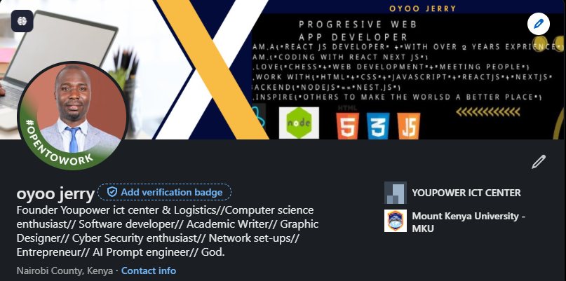

About Me
I'm Oyoo Jerry, a dedicated software developer focused on building
accessible and impactful web applications. My work is rooted in passion
for clean code, user-first design, and problem solving.
Equally I am a passionate and skilled Information Technology
professional with a strong foundation in web development, software
engineering, and network systems. A graduate in Computer Science and a
certified top performer in ICT Networking and Computer Repair from the
National Industrial Training Authority, Oyoo brings both academic
excellence and hands-on experience. He has taught at NITA, volunteered
with global youth organizations like UNESCO and
UCESCO, and is driven by a mission to use technology
for impactful solutions. With a keen eye for detail and a heart for
innovation, Oyoo continues to grow as a digital creator, developer, and
mentor.
Projects
Online Voting System
A secure and scalable voting application for institutions and
communities.
Driven by a deep passion for innovation and digital solutions, Oyoo
Jerry envisions and develops a secure, scalable, and user-friendly
voting platform tailored for institutions, organizations, and
communities. Leveraging his strong background in networking, software
development, and system security, the application is designed to
ensure transparent, tamper-proof, and accessible elections—whether in
schools, corporates, or community-based setups. With an eye on
inclusivity and modern digital governance, Oyoo's solution not only
simplifies voting but also builds trust and credibility in
decision-making processes, empowering communities through
technology-driven democracy.
Portfolio Website
A clean, accessible and SEO-friendly personal portfolio site.
A modern, clean, accessible, and SEO-optimized personal portfolio
website designed to showcase professional skills, projects, and
achievements—built with semantic HTML5, responsive layout, and
user-friendly navigation for both search engines and all users,
including those using assistive technologies is what i offer.

Task Manager App
Helps users track goals and improve productivity with reminders.
A feature-rich task management application designed to help users
efficiently track their goals, manage tasks, and boost productivity.
With a user-friendly interface, the app allows users to set reminders,
prioritize tasks, and monitor progress over time. By integrating
productivity techniques and offering insightful analytics, this app
empowers users to stay organized and focused on their objectives.
Responsive Blog Template
A mobile-friendly blog template built with HTML5 and vanilla CSS.
Oyoo Jerry, a passionate ICT enthusiast and advocate for inclusive
digital experiences, was honored for his outstanding work on a
mobile-friendly blog template built entirely with HTML5 and vanilla
CSS. The award recognized not only the technical brilliance and
responsive design of the template but also its deeper
purpose—amplifying conversations around mental health awareness. With
a clean layout, accessible navigation, and semantic structure, Oyoo’s
blog template was thoughtfully designed to be easily readable across
all devices, especially smartphones. He understood that many young
people and vulnerable individuals turn to mobile platforms when
seeking help or information about mental health. By making the
template fast, accessible, and SEO-optimized, he ensured that
meaningful mental health content could reach more people—especially in
underserved communities. This award-winning project reflects Oyoo’s
belief that technology should do more than function—it should heal,
connect, and empower. His blog template became a tool for educators,
therapists, and storytellers to share their experiences, offer
support, and foster empathy, proving that even simple code can carry
powerful messages of hope

Python Quiz App
A CLI-based quiz system using Python for learning assessments.
A Python-based quiz application designed to enhance learning
assessments through interactive command-line interface (CLI)
experiences. This app allows users to test their knowledge on various
topics, providing instant feedback and scoring, making it an ideal
tool for educators and learners alike.